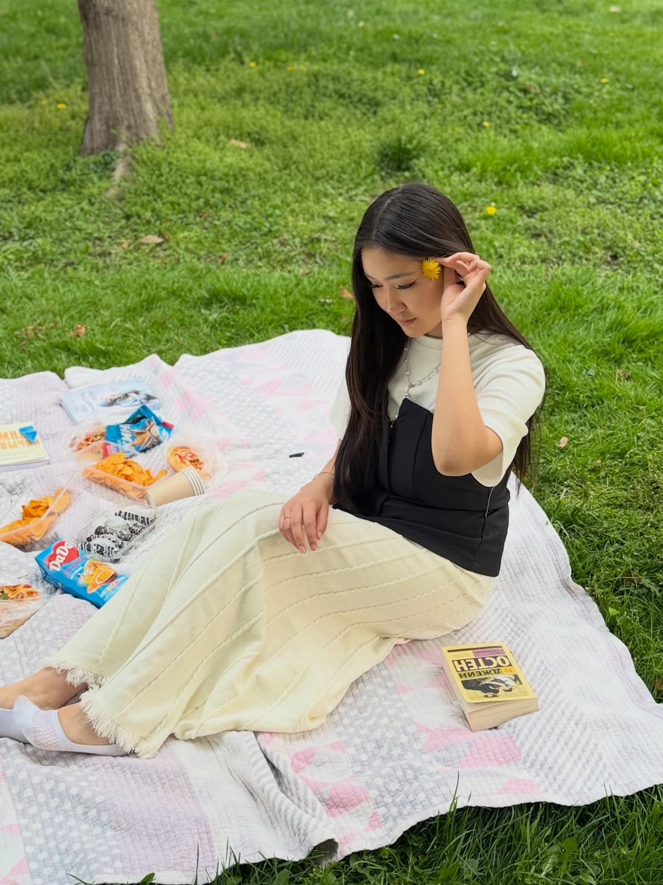
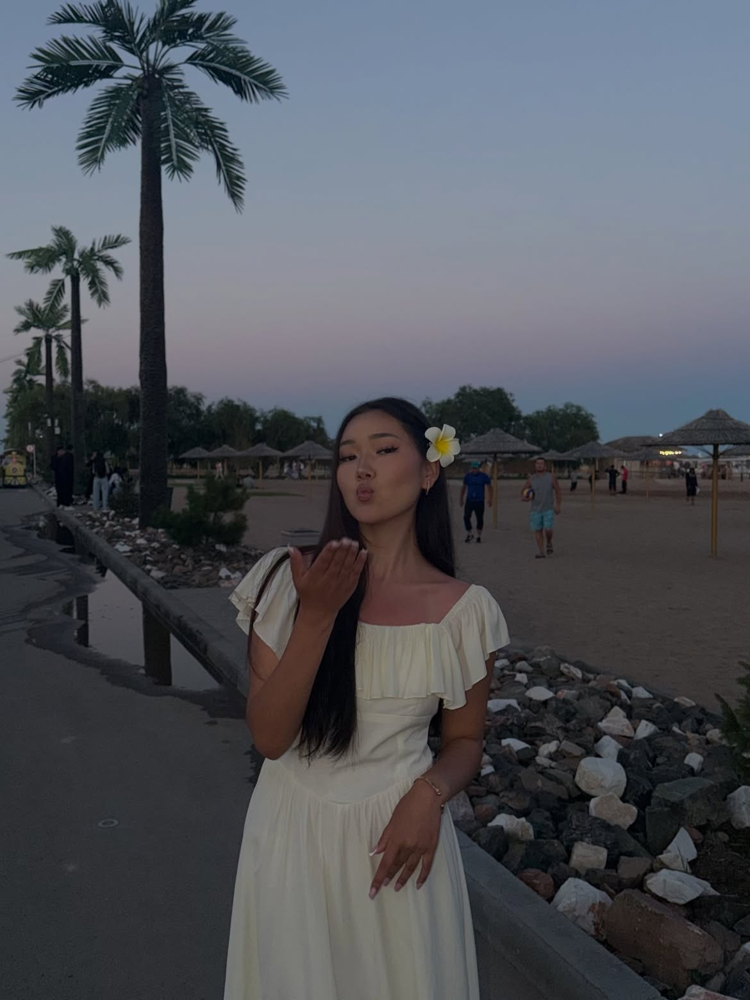
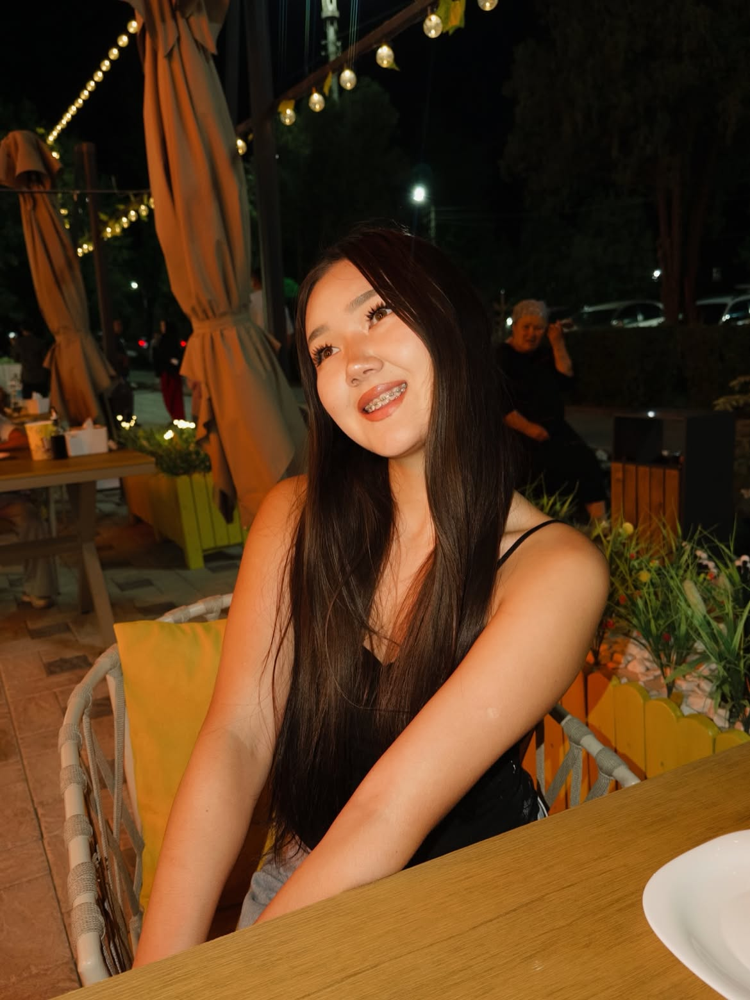

Это для тебя
Амина, я знаю, что это звучит странно, но если честно — то, как мы встретились, кажется мне чем-то большим, чем просто совпадение.
В тот день на пляже, среди пяти тысяч человек, я не видел никого, кроме тебя. Ты прошла мимо, словно белая лебедь — так уверенно, так естественно в своем белом платье. И как бы я ни старался смотреть в другую сторону, мои глаза снова и снова находили тебя. Твой взгляд, твоя улыбка... я не мог отвести взгляд. Но я оказался слишком робким. Я упустил момент, и ты исчезла в толпе.
А потом произошло что-то, в вероятность чего я едва верю. Когда ты встречаешь пять тысяч человек в день, когда каждый снимает видео и фото, когда алгоритм должен показать тебе миллионы контентов — шансы, что я увижу именно твои фотографии и видео из того же дня, из того же места... это почти невозможно. Но это произошло. И я понял, что это не может быть просто математической случайностью.
Я собрал всю свою смелость и написал тебе. Я понимал, что шансов мало, но надежда жила во мне. А когда неделю не было ответа, я уже мирился с тем, что упустил тебя навсегда. Но потом пришло твоё сообщение. И это было лучшее, что я мог получить.
Помнишь вечер, когда мы встретились за ужином? Когда мы смеялись, шутили, и время просто растворялось? А потом, когда ты показывала мне свои видео, и я смотрел не на текст, не на фон — я смотрел на тебя. Я таял, как лед на летнем солнце, а ты была тем солнцем. Твой взгляд, твоя улыбка — всё остальное потеряло значение.
Я знаю, что мы ещё не знаем друг друга так хорошо, как хотелось бы. Мы только начинаем. Но я хочу, чтобы ты знала — я хочу узнать тебя лучше. Все те части, которые видны сейчас, и те, что ещё скрыты. Я готов стараться, пытаться, быть честным. Потому что встреча с тобой была не случайностью. Это была возможность, которую я не могу упустить снова.
Давай попробуем. Давай узнавать друг друга медленнее, тщательнее, честнее. Без спешки, но и без сомнений. Вот всё, что я прошу.
You and your beauty


